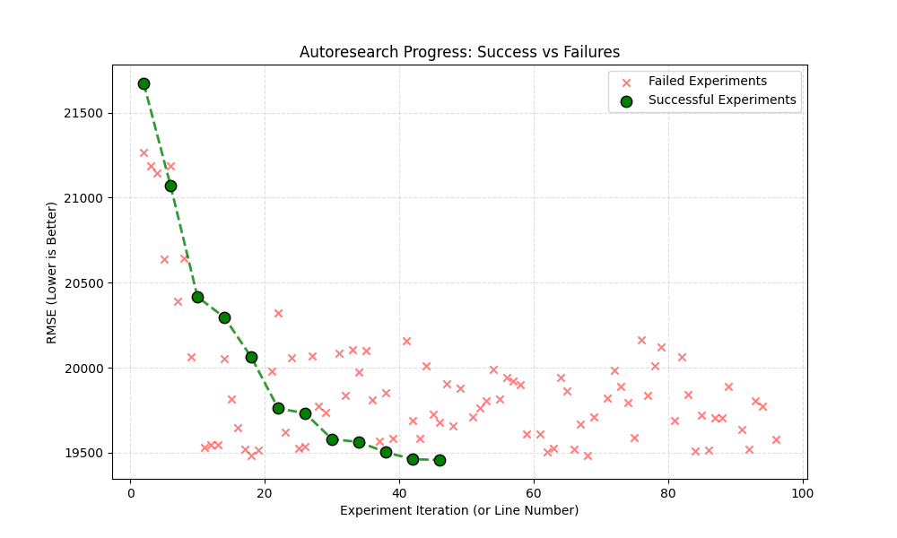

Project Overview
Inspired by Karpathy's autoresearch, this project applies AI agents to the complex task of feature engineering for machine learning. Specifically, it was used to compete in a Kaggle-in-class competition focused on predicting house prices in the Ames Housing Dataset.

Key Achievements
- Achieved 7th place out of approximately 100 participants.
- Automated the discovery of complex interactions like "Age-Adjusted Foundation Premium" and "Roof-Exterior Premium".
How it Works
The system uses an LLM-based agent (leveraging Aider) to analyze the current model performance, propose new feature engineering ideas, implement them in the preprocessing pipeline, and validate the results through cross-validation. This "loop" allows for rapid experimentation and discovery of features that a human might overlook.
Technical Stack
- Continious agent: AiderChat ran independent for a few hours without human interaction.
- ChatGPT API: OpenAI o3-mini was used to make the changes to the code.
- Code validation: The proposed change was implemented and train an Autogluon model for 5 minutes, if the resulting RMSE was better than before the change was kept if not it was discarted.